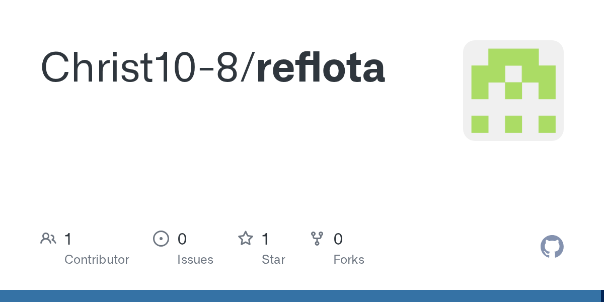

뉴스만 옮기지 않고, 직접 받아서 돌려 본 것과 못 해 본 것을 솔직하게 적습니다. 다뤄 줬으면 하는 오픈소스가 있으면 메일로 알려 주세요.

하루 새 GitHub에서 생긴 파일 복구 도구 reflota를 받아, 설치도·인터넷도 없이 테스트만 돌려 본 기록. FAT 계열은 실제로 복구까지 확인했고, NTFS는 검증하지 못했으니 그 점만 유의하면 된다.
Google이 낸 에이전트용 Chrome DevTools 도구를 받아서 설치 없이 살펴봤다. MCP 통신 규격은 직접 확인했지만, 실제 브라우저 제어와 성능 트레이스는 돌려보지 못했다. 대신 코드를 읽다가 사용 정보를 기본값으로 Google에 보내는 설정을 발견했다.
imbue-ai/darwinianevolver는 다윈 진화 아이디어를 코드로 옮긴 가벼운 오픈소스다. 프롬프트가 실패한 사례를 LLM에게 보여 주고 고쳐 쓰게 한 뒤, 점수가 더 좋은 쪽을 남기는 방식이다. 저장소를 내려받아 설치 없이 코드를 읽었고, 내 로컬 모델로 …
Yogurt는 회의 앱에 봇을 넣지 않아도 마이크와 시스템 소리를 녹음해 전사하고, 요약·담당자·다음 단계·리마인더까지 로컬에서 만들어 주는 무료 오픈소스 앱이다. 이 글은 앱을 설치해 쓴 기록이 아니다. 저장소를 받아 코드를 읽고, 설치 없이 돌릴 수 있는 부분만 실…
Google이 "개인 콘텐츠는 사람이 안 본다"고 약속했던 Gemini의 연결 앱 정책이 뒤집혔다는 1인 문서가 GitHub에 올라왔다. 나는 이 저장소를 받아 설치 없이, 인터넷도 없이 코드만 살펴보고 실제로 해 볼 수 있는 것까지만 확인했다. 이 글은 그 기록이다.
임의의 영상을 받아 샷 단위로 쪼개고, "실사였나, AI 생성이었나, 코드로 그렸나"를 메타데이터·프레임 분석으로 판단해 리포트로 만들어 주는 오픈소스 CLI 도구다. 이번엔 이 맥의 격리 폴더 안에 venv로 설치해 핵심 분해(decompose)를 실제로 돌려 봤다.…
284B MoE 모델을 64GB 램에, 30B MoE를 16–32GB 램에 GPU 없이 돌리자는 llama.cpp 패치 + 양자화 키트(llama-modchip)를 받아서, 설치 없이 코드를 읽고 돌려 볼 수 있는 범위까지 살펴봤다. 결론부터 말하면 이 키트가 힘을 쓰…
PixelOE는 고해상도 사진을 AI나 딥러닝 없이, 고전 영상처리만으로 도트풍 픽셀 아트로 바꾸는 파이썬 라이브러리다. 이번에는 인터넷 없이 받기만 하고 설치는 하지 않아 원본을 실행하지 못했다. 대신 핵심 아이디어를 표준 라이브러리로 다시 짜서 돌려 보는 데까지는 …
Claude Code나 Codex 같은 명령줄 AI를 단말 앞에서 지키며 쓸 필요 없이, 이벤트가 오면 알아서 일하고 판단이 필요할 때만 카드로 물어보는 오픈소스 루프다. 이번 글은 이 저장소를 받아 설치 없이 코드를 읽은 기록이다.
구글이 공개한 에이전트 스킬 185개가 담긴 공식 저장소를 받아, 설치도 인터넷도 없이 어떤 것이 실제로 돌아가는지만 확인해 본 기록입니다.
macOS에서 디스크 전체의 파일을 검색하는 도구 fsearch를 저장소째 받아 설치하지 않은 채로 살펴봤습니다. 바이너리는 실행하지 못했고, 대신 예제 스크립트 3종을 돌렸습니다.
Sill은 GitHub 별 4,497개, 생성 43일째인 Apache-2.0 프로젝트다(2026-11-05 04:48 KST 기준). 저장소를 내려받아 설치하지 않고 인터넷도 끊은 채 살펴봤다. 앱은 실행하지 못했고, 저장소에 들어 있는 자동 검사만 돌려 봤다.
gstack은 AI 코딩 도구인 Claude Code에 CEO·디자이너·QA 등 50여 개 역할 스킬을 얹어, 혼자 개발해도 팀처럼 돌아가게 해 주는 MIT 라이선스 오픈소스다. 이번에는 인터넷 없이 저장소를 받아 설치하지 않고 살펴봤고, "AI 냄새나는 디자인"을 잡…
Craft Anything은 웹사이트, 앱, 게임이 어떻게 동작하는지 내장 도구로 조사한 뒤, 코딩 AI가 원본을 본뜬 새 프로젝트를 만들고 원본과 비교하고 수정까지 해 주는 순수 Rust 기반 오픈소스입니다(8,372 stars, Apache-2.0, 2026-10-…
버그 10개를 숨긴 할 일 앱을 Qwen-Agent로 검사하게 했습니다. 힌트 없이는 0개, "경계 조건을 시험해 보라"는 힌트를 주자 5개를 찾았습니다. 오픈소스 에이전트 프레임워크 Qwen-Agent를 설치 없이 받아서 직접 살펴본 기록입니다.
어떤 소프트웨어가 어떻게 돌아가는지 실제로 검사하고, AI 코딩 에이전트가 그것을 다시 만든 뒤 원본과 비교해 고쳐 주는 오픈소스 프로젝트다. 순수 Rust로 쓰였고, 2026년 10월 31일 공개 후 3일 만에 별 6,543개를 받았다. early alpha 단계이며…
로컬 AI에게 새 대화에서 100번 "아주 강력한 랜덤 비밀번호"를 만들어 달라고 했더니 4개가 겹쳤다. zxcvbn으로 점검해 보니 가장 약한 비밀번호는 무차별 대입으로 1초 만에 깨진다.
AI가 만든 티가 나는 화면(보라 그라디언트, 글로우, 이모지)을 고치는 디자인 절차를 Claude Code나 Codex에 심어 주는 스킬이다. 내려받아서 설치 없이 스크립트만 실제로 돌려 봤다.
FC(게임기)의 CPU를 대형 언어모델의 가중치 안에 "번역"해, 모델을 돌리기만 해도 게임이 실행되게 만든 프로젝트다. 나는 저장소를 내려받아 아무것도 설치하지 않고 인터넷도 끊은 채로, 돌릴 수 있는 부분만 돌려 봤다.
Lightpanda는 크롬과 별개로 Zig로 처음부터 새로 짠 헤드리스 브라우저로, AI 에이전트와 자동화 수집을 주로 겨냥한다. 크롬보다 가볍고 빠르다고 내세우지만, 나는 설치하지 않고 소스 코드를 받아 읽는 데까지만 직접 확인했다.
로컬에 깔아둔 AI 코딩 도구를 스마트폰·웹·데스크톱 앱에서 원격으로 다루게 해 주는 오픈소스다. 설치 없이 저장소만 받아 코드를 읽었고, 핵심 기능 2가지를 직접 돌려봤다.
강의 자료를 넣으면 질의응답과 퀴즈를 만들어 주는 AI 튜터 "DeepTutor"를 받아, 설치하지 않고 복습 계산 코드만 따로 떼어 돌려 봤다.
트레이딩 회사의 업무 흐름을 AI 에이전트로 옮겨 놓은 오픈소스다. 직접 받아서 코드를 읽고 일부를 돌려 봤다. 이 프로젝트에서 눈여겨볼 부분은 실제 거래보다 "과거 결정을 기록해 두고 나중에 검증하는" 설계였다.
repo-proof는 "이 저장소의 README가 실제로 맞는가"를 기계로 판정하는 도구다. 설치 없이 저장소만 받아서, 인터넷이 끊긴 환경에서 읽을 수 있는 부분만 읽었다. 그러다 판정 로직에서 다중 줄 정규식 결함 하나를 재현했다.
AI가 자료를 보고 쓴 글에서 숫자·이메일·URL이 정말 자료에 나오는지 모델 없이 대조해 주는 Python 도구 numguard를 받아 봤다. 설치하지 않고 로컬에서 코드를 읽고 돌려 본 기록이다.
GitHub 스타가 117,197개인 LLM 다에이전트 주식 트레이딩 프레임워크를 받았다. 의존성은 하나도 설치하지 않은 채, 코드를 읽고 돌릴 수 있는 데까지 실제로 돌려 봤다.
AI 에이전트가 웹에서 직접 데이터를 받아 오게 해 주는 명령줄 도구 Agent-Reach를 내려받았다. 설치도 인터넷 연결도 하지 않은 채 코드를 읽고, 돌릴 수 있는 부분만 실제로 실행해 봤다.
앱·바이너리를 분석(역공학)하게 하는 에이전트 스킬이다. MCP 서버나 207개 도구 없이 8KB짜리 안내 파일 한 장만으로 "어떤 원시 명령을 쓰면 가장 빠른지"를 알려 준다. 설치 없이, 인터넷도 쓰지 않고 직접 받아서 확인해 봤다.
같은 로컬 AI를 5개 인스턴스로 나눠 문제를 풀면 혼자 풀 때보다 정답률이 오른다는 프로젝트 GVS5H를 받아서, 설치 없이 인터넷도 끊은 채로 살펴본 뒤 이 맥에서 직접 돌려 본 기록이다.
LLM 프롬프트 평가·보안 테스트 도구 promptfoo(별 26,383개, MIT)를 받아 봤습니다. 설치는 못 해서 코드를 읽고, 핵심만 다시 만들어 돌려 본 기록입니다.
OpenShell은 자율 AI 에이전트를 격리해서 돌리는 런타임이다. 정책으로 에이전트의 파일·네트워크·시스템 접근을 제어한다. 다만 macOS의 격리는 아직 실험 단계이고, Docker가 없어 직접 돌려보지는 못했다.
회사 ATS(채용 관리 시스템)에서 IT 공고를 직접 긁어오는 오픈소스 채용 검색 도구 freehire를 받아, 인터넷 없이 돌릴 수 있는 부분만 실행해 본 기록이다.
Mac 한 대에 같은 27B 모델을 세 가지 실행 프로그램으로 띄우고 똑같은 질문을 보냈다. 답을 쓰는 속도는 가장 빠른 Splash가 나머지 두 프로그램의 약 2.4배였다.
Mac.apk(v1.0.2303, AGPL-3.0)는 애플 실리콘 맥에서 안드로이드 앱(.apk)을 가상머신 없이 네이티브로 실행하는 오픈소스입니다. GitHub에서 저장소만 받아 코드를 읽었고, 내부에서 일어나는 "ARM32 앱 코드 → ARM64 변환" 과정은 인터…
DeepSeek가 자체 서비스에서 쓰는 추론 엔진 DeepInfer를 오픈소스로 냈다는 소식에, 코드를 받아 Mac에서 실제로 돌려볼 수 있는 범위까지만 살펴봤다. 설치는 하지 않았다.
headroom은 AI 에이전트가 읽는 도구 출력, 로그, RAG 청크, 파일을 LLM에 보내기 전에 로컬에서 압축해 토큰을 줄여 주는 오픈소스다. 저장소를 받아 설치 없이 코드를 읽었고, 시드된 벤치마크 시나리오를 오프라인으로 돌려 압축이 어디까지 잘라낼 수 있는지 …
AI 코딩 에이전트끼리 작업 기록을 나눠 갖게 해 주는 Rust 기반 오픈소스 ai-memory를 받아 봤습니다. 설치도 인터넷도 없는 환경이라 의존성이 없는 shell 훅 레이어만 실험했습니다. 서버 바이너리 실행, MCP, 검색, 기억 통합(consolidation…
Rust로 짠 오픈소스 파라메트릭 3D CAD인 SolidCraft 저장소를 내려받아, 인터넷·설치 없이 살펴보고 돌려볼 수 있는 범위만 실제로 돌려 본 기록이다. GUI·MCP는 못 돌려 봤지만, 코어 수학은 재현 실행으로 확인했다.